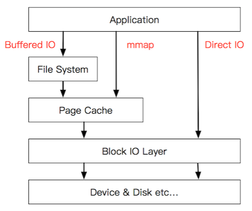
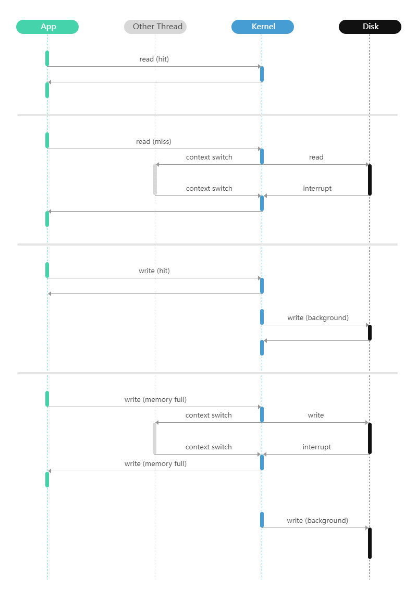
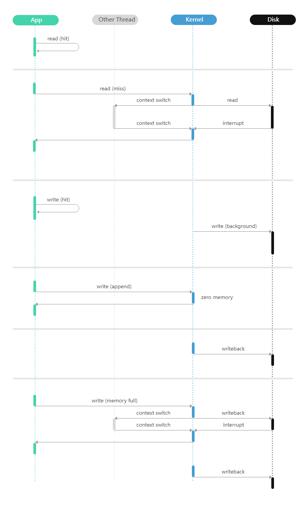
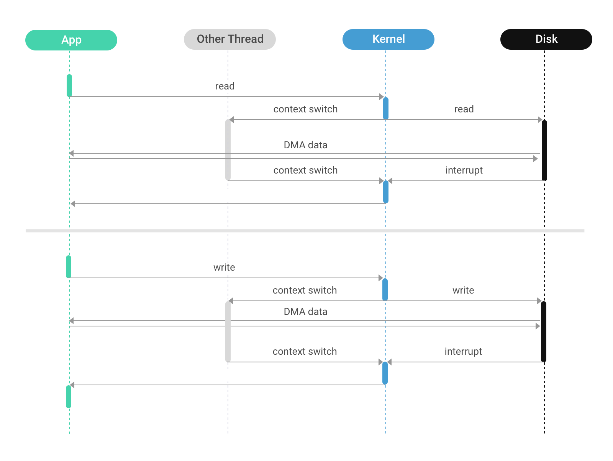
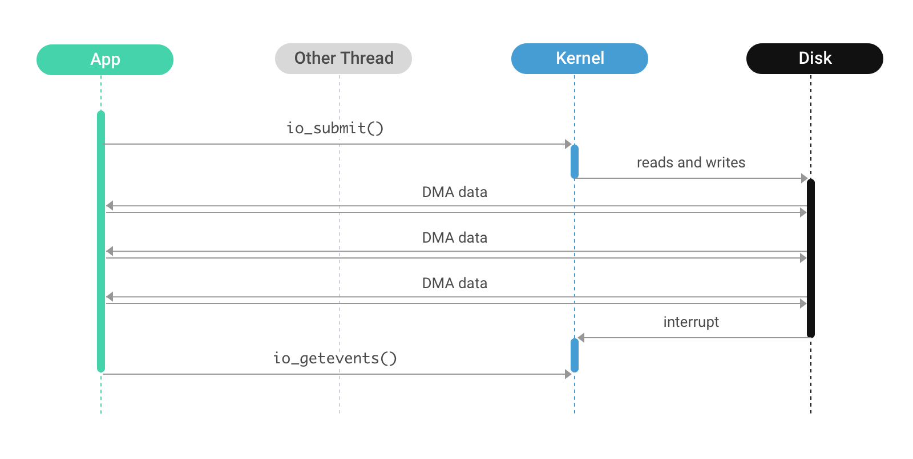

Linux下不同的IO访问方法：Buffer IO、mmap和Direct IO
在Linux系统中，常见的IO访问方法有Buffer IO、mmap和Direct IO三种，其IO栈区别可以简化成如图：

PageCache
在介绍三种IO访问方式之前，先了解一下什么是页缓存。页缓存（PageCache）是操作系统对文件的缓存，用来减少对磁盘的 I/O 操作，以页为单位的，内容就是磁盘上的物理块，页缓存能帮助程序对文件进行顺序读写的速度几乎接近于内存的读写速度，主要原因就是由于 OS 使用 PageCache 机制对读写访问操作进行了性能优化。
页缓存读取策略：
当进程发起一个读操作 （比如，进程发起一个 read() 系统调用），它首先会检查需要的数据是否在页缓存中：
- 如果在，则放弃访问磁盘，而直接从页缓存中读取。
- 如果不在，则内核调度块 I/O 操作从磁盘去读取数据，并读入紧随其后的少数几个页面（不少于一个页面，通常是三个页面），然后将数据放入页缓存中。
页缓存写策略：
当进程发起 write 系统调用写数据到文件中，先写到页缓存，然后方法返回。此时数据还没有真正的保存到文件中去，Linux 仅仅将页缓存中的这一页数据标记为 “脏”，并且被加入到脏页链表中。
然后，由 flusher 回写线程周期性将脏页链表中的页写到磁盘，让磁盘中的数据和内存中保持一致，最后清理“脏”标识。在以下三种情况下，脏页会被写回磁盘：
- 空闲内存低于一个特定阈值。
- 脏页在内存中驻留超过一个特定的阈值时。
- 当用户进程调用 sync() 和 fsync() 系统调用时。
清除缓存
可以用 echo 3 > drop_cache 把 cache/buffer 清除。
Buffer IO
Buffer IO是传统的文件操作方式，由kernel通过page cache统一管理缓存，page cache的创建和回收由kernel控制。
read/fread调用要求内核读取文件的一部分并将数据复制到调用进程地址空间中。如果所有请求的数据都在page cache中，内核将复制它并立即返回；否则，它将安排磁盘将请求的数据读取到page cache中，阻塞调用线程，当数据可用时，它将恢复线程并复制数据。
write/fwrite调用默认是异步写，只是将数据复制到page cache中并立即返回，内核将在一段时间后将page cache写回磁盘；如果使用sync，则是同步写，保证该文件所有的脏页落盘后才返回

整个过程有几次拷贝？从磁盘到 Page Cache 算第一次的话，从 Page Cache 到用户态 buffer 就是第二次。
使用示例：
1 |
|
mmap
mmap将PageCache映射到用户的虚拟内存地址，用户代码可以直接以内存访问的方式，对page cache进行操作。
使用mmap系统调用将文件内存映射到应用程序地址空间中。这会使地址空间的一部分直接指向包含文件数据的page cache页面。完成这个准备步骤后，应用程序就可以使用处理器的内存读和内存写指令来访问文件数据了。如果所请求的数据恰好就在缓存中，那么内核会被完全绕过，读（或写）操作将以内存速度执行。如果发生缓存未命中的情况，就会产生缺页异常，内核会让当前活动线程进入休眠状态，同时去读取该页的数据。当数据最终准备好时，内存管理单元会被设置好，以便新读取的数据能被线程访问，随后该线程会被唤醒。

整个过程有几次拷贝？从磁盘到Page Cache一次拷贝。相比于Buffer IO少了 Page Cache 到用户态 buffer 的一次拷贝。
使用示例：
1 |
|
Direct IO
同步Direct IO(DIO)
传统的读写方式以及内存映射（mmap）都会涉及内核page cache，并将 I/O 调度工作推迟到内核来处理。当应用程序希望自行调度 I/O 时，它可以使用direct I/O。这需要使用O_DIRECT标志打开文件；后续操作将使用常规的读写系列系统调用，不过它们的行为现在会有所改变：不再访问缓存，而是直接访问磁盘，这意味着调用线程将会无条件进入休眠状态。而且，磁盘控制器会绕过内核，直接将数据复制到用户空间。

使用示例：
1 |
|
异步Direct IO(Asynchronous IO)
异步direct I/O 是对direct I/O 的一种改进，其行为与之类似，但能防止调用线程阻塞。相反，应用线程使用io_submit(2)系统调用安排direct I/O 操作，而且该线程不会被阻塞；I/O 操作与常规线程的执行并行进行。另一个独立的系统调用io_getevents(2)用于等待并收集已完成的 I/O 操作的结果。与同步direct I/O一样，内核的页缓存会被绕过，磁盘控制器负责将数据直接复制到用户空间。

共性与差异
不同的访问方法有一些共同的特性，也存在一些差异。下表总结了这些特性，以下将对其进行详细阐述。
| 特性 | 读写操作（R/W） | 内存映射（mmap） | 直接I/O（DIO） | 异步直接I/O（AIO/DIO） |
|---|---|---|---|---|
| 缓存控制 | 内核 | 内核 | 用户 | 用户 |
| 数据复制(不算磁盘与page cache之间) | 是 | 否 | 否 | 否 |
| 内存管理单元（MMU）活动 | 低 | 高 | 无 | 无 |
| I/O调度 | 内核 | 内核 | 混合 | 用户 |
| 线程调度 | 内核 | 内核 | 内核 | 用户 |
| I/O对齐 | 自动 | 自动 | 手动 | 手动 |
| 应用复杂度 | 低 | 低 | 中等 | 高 |
缓存控制
对于读写操作和内存映射（mmap）来说，缓存管理是内核的职责所在。系统的大部分内存都分配给了页缓存。当内存不足时，内核会决定哪些页面应该被置换出去；当页面需要写回磁盘时，内核也会进行相应处理，并且控制预读操作。应用程序可以通过madvise(2)和fadvise(2)系统调用向内核提供一些指引。
让内核控制缓存有很大的优势，内核开发者们在过去数十年间投入了大量精力来对缓存所使用的算法进行优化调整。这些算法被成千上万种不同的应用程序所使用，而且通常都很有效。然而，其劣势在于这些算法是通用的，并没有针对具体的应用程序进行优化调整。内核必须推测应用程序接下来的行为，即便应用程序知晓自身的不同情况，通常也没办法帮助内核正确地进行推测。这就导致了可能会错误地置换页面、按错误的顺序调度 I/O，或者针对近期内不会使用的数据安排预读。
数据复制和 MMU 活动
内存映射（mmap）方法的一个好处在于，如果数据在缓存中，那么可以完全绕过内核。内核无需将数据在内核空间和用户空间之间来回复制，因此在这一活动上耗费的处理器周期会更少。这对于大部分数据都在缓存中的负载是有利的（例如，当存储容量与内存容量的比例接近 1:1 时）。
然而，当数据不在缓存中时，mmap 就存在弊端了。这种情况通常在存储容量与内存容量的比例明显高于 1:1 时发生。每一个被调入缓存的页面都会导致另一个页面被置换出去。这些页面需要在页表中插入和移除；内核必须扫描页表以找出不活跃的页面，使其成为可置换的候选页面等等。此外，mmap 需要为页表分配内存。在 x86 处理器上，这需要占用被映射文件大小的 0.2%。这个比例看似很低，但如果应用程序的存储与内存的比例为 100:1，那么结果就是 20% 的内存（0.2%×100）都要用于页表。
I/O 调度
让内核控制缓存（针对 mmap 和读写访问方法）存在的一个问题是，应用程序失去了对 I/O 调度的控制权。内核会选择它认为合适的数据块，并安排写入或读取操作。这可能会导致以下问题：
- 写入风暴：当内核安排大量写入操作时，磁盘会忙碌很长一段时间，从而影响读取延迟。
- 内核无法区分 “重要” 和 “不重要” 的 I/O：属于后台任务的 I/O 可能会压过前台任务，进而影响前台任务的延迟。
通过绕过内核页缓存，应用程序自己承担起了调度 I/O 的责任。这并不意味着问题就此解决了，但意味着只要给予足够的关注和投入精力，这些问题是可以得到解决的。
使用direct I/O 时，每个线程可以控制何时发起 I/O，但内核控制着线程何时运行，所以发起 I/O 的责任由内核和应用程序共同分担。而对于异步direct I/O（AIO/DIO），应用程序完全掌控着 I/O 发起的时间。
线程调度
一个使用 mmap 或读写操作的 I/O 密集型应用程序无法预估其缓存命中率会是多少。因此，它必须运行大量的线程（比其运行机器的核心数多得多）。如果线程数量过少，它们可能都会等待磁盘操作完成，从而导致处理器利用率不足。由于每个线程通常最多只有一个未完成的磁盘 I/O，为了让磁盘始终处于忙碌状态，运行的线程数量必须大致为存储子系统的并发数乘以某个较小的系数。然而，如果缓存命中率足够高，那么这些大量的线程就会相互争抢有限的核心资源。
使用direct I/O 时，这个问题会有所缓解，因为应用程序确切地知道线程何时因 I/O 操作而阻塞以及何时可以运行，所以应用程序可以根据运行时的情况来调整运行线程的数量。
对于异步direct I/O（AIO/DIO），应用程序可以完全控制运行线程和等待 I/O（二者完全分离），因此它能够轻松适应内存受限或磁盘受限等各种情况。
I/O 对齐
存储设备有其块大小，所有的 I/O 操作都必须按照这个块大小的倍数来执行，通常块大小为 512 字节或 4096 字节。使用读写操作或内存映射（mmap）时，内核会自动进行对齐操作，在内核发起一个小的读写操作之前，会将其扩展到正确的块边界。
对于direct I/O（DIO），则需要应用程序自行进行块对齐操作。这会增加一定的复杂性，但也有优势：内核通常会将对齐扩展到 4096 字节的边界，即便 512 字节的边界就足够了，但使用 DIO 的用户应用程序可以发起按 512 字节对齐的读取操作，这样对于小数据项可以节省带宽。
应用复杂度
尽管前文的讨论表明对于 I/O 密集型应用程序来说异步direct I/O（AIO/DIO）更具优势，但这种方法也有显著的代价：复杂度。将缓存管理的责任交给应用程序意味着它能比内核做出更好的选择，并且以更低的开销做出这些选择。然而，相应的算法需要编写和测试。使用异步 I/O 要求应用程序通过回调、协程或类似的方法来编写，而且这往往会降低许多现有库的可复用性。
总结与选择
前面我们展示了在 Linux 系统上执行磁盘 I/O 的三种不同方式以及它们各自涉及的共性与差异。以下是对 Buffer IO（对应文中提到的传统读写方式，基于read/write系统调用等情况）、mmap（内存映射）和 Direct IO（直接 I/O）三种方式选择相关要点的总结：
Buffer IO
- 优势：
- 简单易用：是传统且很早就存在的方法，使用常见的read和write等系统调用即可，上手容易，对于一些对 I/O 性能要求不是极致苛刻、开发便捷性优先的应用场景来说容易实现。
- 内核管理缓存：缓存管理由内核负责，内核开发者投入大量精力优化缓存算法，能适用于众多不同应用，在很多常规情况下表现稳定有效。例如当所请求数据在页缓存时，能快速复制数据并返回，对应用开发者而言无需操心复杂的缓存管理逻辑。
- 劣势：
- 缺乏针对性优化：内核使用的缓存算法是通用的，没办法针对具体某个应用的使用模式精准优化，可能出现内核猜错应用行为的情况，像错误置换页面、I/O 调度顺序不合理、预读不契合应用后续需求等问题，进而影响性能。
- 应用失去 I/O 调度控制权：应用无法自主决定 I/O 调度，完全依赖内核选择合适的数据块进行读写安排，可能出现如写入风暴影响读延迟、无法区分重要和不重要 I/O 导致后台任务 I/O 干扰前台任务等情况。
- 适用场景：适用于对 I/O 性能要求不极端高、应用逻辑相对简单、希望依靠内核通用缓存管理机制就能满足基本读写需求的场景，比如一些简单的小型文件读写操作为主的应用。
mmap（内存映射）
- 优势：
- 缓存优势（部分情况）：如果数据已经在缓存中，可完全绕过内核进行数据访问，避免了内核在用户空间和内核空间来回复制数据的操作，能节省处理器周期，在存储容量与内存容量比例接近 1:1、数据大多在缓存的负载场景下表现较好。
- 自动对齐：在进行 I/O 操作时，能自动进行 I/O 对齐，小的读写操作会被内核自动扩展到正确的存储设备块边界，对开发者来说操作相对省心。
- 劣势：
- 缓存相关劣势（部分情况）：当存储容量与内存容量比例显著高于 1:1，数据不在缓存时，会出现频繁的页面置换等情况，导致需要耗费较多资源在页表操作上，且会占用一定内存用于页表（如在 x86 处理器上会占用映射文件大小 0.2% 的内存用于页表，在特定高存储内存比场景下影响较大）。
- 应用复杂度与调度问题：同样无法自主控制 I/O 调度，存在类似 Buffer IO 中因内核调度导致的相关问题；并且 I/O 密集型应用难以预估缓存命中率，为保证磁盘利用率需运行大量线程，在缓存命中率高时这些线程又易争抢核心资源。
- 适用场景：适合那些数据在缓存中概率相对较高、对读写操作时的数据复制开销比较敏感、对 I/O 调度精细控制要求不高的应用场景，比如一些内存中经常会缓存大部分常用数据的数据分析类应用（前提是内存能较好容纳常用数据部分）。
Direct IO（直接 I/O）
- 优势：
- 用户掌控缓存与 I/O 调度：将缓存控制和 I/O 调度的部分权力交给了用户，应用可以根据自身需求决定何时进行磁盘读写等操作，虽然仍与内核共同承担部分责任（比如内核控制线程运行时间），但相比前两者在调度自主性上有提升，可在一定程度上解决因内核通用调度带来的问题。
- 精准 I/O 对齐控制（手动）：虽然需要应用自己进行块对齐操作增加了一定复杂性，但也提供了更精准控制的机会，例如可以按需采用更贴合实际需求的较小对齐边界（如 512 字节对齐）节省带宽，不像内核通常会过度对齐到 4096 字节边界。
- 劣势：
- 应用复杂度增加：应用需要承担更多责任，如手动管理缓存、手动进行 I/O 对齐等，开发难度相比前两者有所上升，需要编写和测试相关管理算法，对开发团队技术能力要求更高。
- 线程调度仍部分依赖内核：尽管相比前两者在 I/O 调度上更自主，但线程何时运行仍受内核控制，在一定程度上限制了应用对整体执行情况的完全把控。
- 适用场景：适用于对 I/O 性能有较高要求、需要根据应用自身逻辑精细控制 I/O 调度和缓存管理、对应用复杂度增加有一定应对能力的 I/O 密集型应用，比如数据库管理系统等需要高性能磁盘 I/O 操作且要精准控制读写以满足复杂业务逻辑的场景。
总体而言，选择哪种方式要综合考虑应用对性能的需求、开发团队对复杂度的把控能力、应用的数据缓存特点以及对 I/O 调度自主控制的期望等多方面因素来决定。